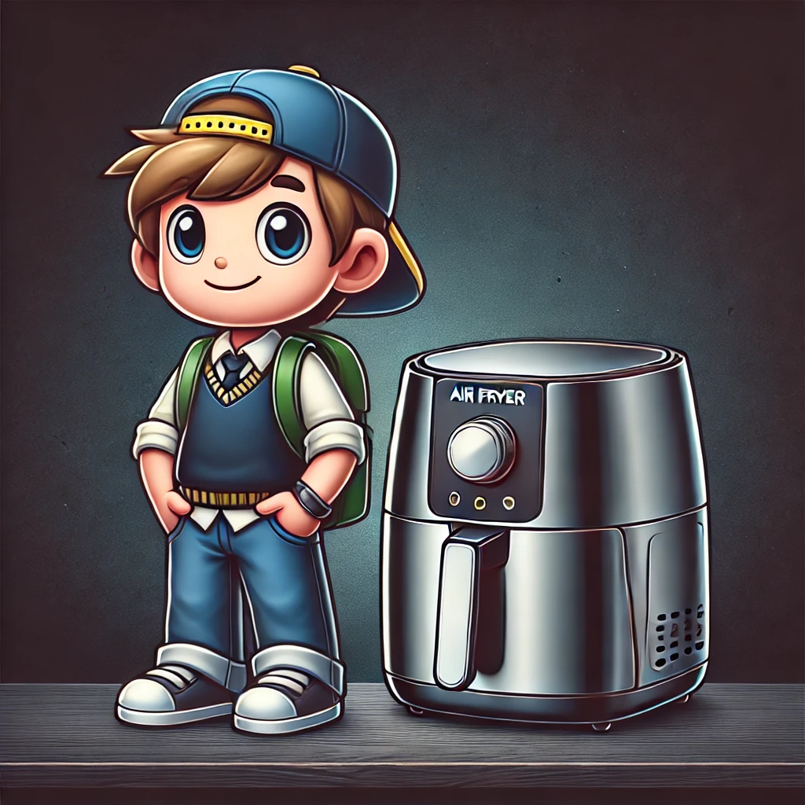

Best Air Fryer for College Students
College life can be hectic, and having the right kitchen tools can make a big difference in maintaining a healthy diet. An air fryer is a versatile, compact, and easy-to-use appliance that can help students prepare quick and nutritious meals. Here are some of the best air fryers for college students that combine functionality, affordability, and ease of use.
1. Dash Compact Air Fryer 1.2-Quart
Key Features:
- Compact Size: 1.2-quart capacity, perfect for small spaces.
- Auto Shut-Off: Prevents overcooking.
- AirCrisp Technology: Reduces added fat by 70-80% without sacrificing flavor.
Why It's Great for College Students:
The Dash Compact Air Fryer is lightweight and small, making it ideal for dorm rooms or shared apartments. It's affordable and easy to use, perfect for quick meals between classes.
2. Chefman TurboFry 2-Quart Air Fryer
Key Features:
- 2-Quart Capacity: Suitable for single servings or small meals.
- Adjustable Temperature Control: Ranges from 200°F to 400°F.
- Dishwasher-Safe Basket: Easy to clean.
Why It's Great for College Students:
The Chefman TurboFry is budget-friendly and has a small footprint, making it easy to fit in any kitchen space. Its adjustable temperature control allows for a variety of cooking options.
3. Instant Vortex 4-in-1 Air Fryer 4-Quart
Key Features:
- 4-in-1 Functionality: Air fry, bake, roast, and reheat.
- 4-Quart Capacity: Great for small groups or meal prep.
- Simple Controls: Easy-to-use touch screen with customizable programs.
Why It's Great for College Students:
The Instant Vortex 4-in-1 Air Fryer offers multiple cooking functions in one compact device, saving space and providing versatility for different types of meals.
4. GoWISE USA 3.7-Quart 8-in-1 Air Fryer
Key Features:
- 3.7-Quart Capacity: Suitable for small to medium-sized meals.
- 8 Preset Functions: Fries, bakes, grills, and roasts with ease.
- Touch Screen Display: Easy to use and program.
Why It's Great for College Students:
The GoWISE USA 3.7-Quart Air Fryer combines affordability with a good capacity, making it suitable for cooking for one or two people. Its preset functions simplify the cooking process.
5. BLACK+DECKER Purify 2-Liter Air Fryer
Key Features:
- Dual Convection Fans: For fast and even cooking.
- 60-Minute Timer: With automatic shut-off.
- Variable Temperature Control: From 175°F to 400°F.
Why It's Great for College Students:
The BLACK+DECKER Purify Air Fryer is reliable and straightforward to use. Its compact size and efficient cooking make it a practical choice for college students with busy schedules.
Conclusion
Choosing the right air fryer can help college students save time and eat healthier. The models listed above offer a range of features and capacities to suit different needs and budgets. Whether you’re cooking for yourself or sharing with roommates, these air fryers will make meal preparation easier and more enjoyable.